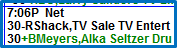

Fill Spots
There are two ways to create fill spots on the Spots screen. The Mode button can be set to “Fill” instead of “Move” to create fill spots one at a time, and Fill spots can also be created in bulk from the Fill screen accessed by pressing the Fill button.
There is a question in the Lists->Advertisers screen that asks whether to show Fill spots on invoices, or you can opt to show or exclude Fill spots on invoices in the Fill screen.
Creating Fill Spots Manually
To manually create a fill spot, switch the Mode from “Move” to “Fill”.
Click on a spot for the advertiser that you want to create the fill spot from, then with the mouse button held down, drag the spot to the desired avail and release the mouse button to create the fill.
The fill spot will be created with a “plus” or “minus” symbol to the right of the spot length, depending on how the Fill setting is answered on the Advertisers->List screen. A “plus” fill will appear on the invoice while a “minus” fill will not.
When in “Fill” mode, you are in control over where the fill spots are placed; normal violation warnings, such as product protection, advertiser, or daypart conflicts will not be issued.
To switch from “Fill” mode back to “Move” mode, simply click the “Move” radio button.
If needed, when in “Move” mode, fill spots can be removed by clicking on the fill spot and dragging and dropping it on the waste bin icon in the upper right corner of the Spots screen. (All fill spots can also be removed at once using the “Erase Fill” action available from the Action button, which is described in a later section of this document.)
When dragging a missed spot onto a fill spot, the word “Drag” will change to “Replace”. Releasing the mouse button at this point will automatically replace the fill spot with the non-fill spot, removing the fill spot. With this feature, if a fill spot needs to be replaced by a missed spot, it’s not necessary to drag the fill to the trash first, simply replace the fill spot with the missed spot and save having to do an additional step.
Fill Button
The Fill button at the top of the Spots screen is used to quickly create multiple fill spots.
To create fill spots, first select which vehicle or vehicles you wish to fill from on the left side of the screen. You can choose to fill from all vehicles by checking the “All Vehicles” checkbox, or you can select the vehicles individually. Then select the Start and End Dates and Start and End Times of the vehicles that you want to fill from. (This could be used to create fill spots from a different week than the target week.)
Contracts associated with the selected vehicles will appear in the box below. You can also choose what type of contracts to include by selecting, $ Spots (contracts with dollars), N/C (contracts that have no dollars attached), PSAs, Promos, Remnants, PIs (Per Inquiry), and DRs (Direct Response).
The system defaults to showing the individual contract lines. Switching the toggle from “line” to “contract” will display one contract per line.
The vehicle that is being filled can also be changed by selecting a different vehicle from the “To” vehicle dropdown.
Specific days to fill can also be checked on or off by clicking the appropriate checkbox in the “To” area. The Start and End Time that will be filled can also be altered from the default of 12M to 12M. This would be the way to mass fill a subset of the available days and times without filling the entire week from 12M to 12M.
Fill Scheduling Rules
Fill spots are created using the ordered dates, days, times, events and vehicles defined for a schedule line. Indicate the rules the Fill spots will follow by checking the appropriate boxes.

- Show on Invoice
- As Advt (Advertiser) Set will follow how the advertiser is set up to handle Fill spots in the List->Advertisers screen
- Yes will create spots with a status of “Bonus” on the Spot Reports and the Invoice
- No will create spots with a status of “Extra”
- Honor Avail Names: If checked on, Fill spots will only be created within the Named avail they were booked into; if unchecked, they will be created and scheduled into any named avail, for example, a spot ordered into the avail name “Pre-Game” could be scheduled into a “Post-Game” named avail.
- Advt/Competitives
- Vehicle Rule – will default to the scheduling rules defined in the Vehicle Options Table.
- Not Same Break – will not schedule spots in the same break.
- None – will not use any scheduling rules, so spots of the same advertiser may be scheduled in the same break.
- Ignore Empty Avails: This is used if you only want to fill completely open breaks and do not want to fill partially sold breaks.
- Use Line Day/Times: If checked on, fill spots will follow whatever line day/time parameters were set on the contract. If unchecked, then fill spots can be created for days and times outside the daypart parameters for the line.
- Skip Locked Avails: If this is checked on, any locked avails will be bypassed when creating fills.
- Allow 10” spots into 15” avails: If you have a combination of 10 and 15 second spot lengths and you need to create the 10’s for the 15’s, select this option
After choosing the options you wish to use, click “Fill”, answer “Yes” to the popup question, and the avails will be filled.
Once created, Fill spots will have a “-“ in front of them if they are not to appear on the invoice, and a “+” if they are to appear on the invoice.

It is also possible to create fill spots one at a time on the Fill screen by dragging a line or contract in the lower half of the Fill screen to one of the days in the “To” vehicle area. The rules specified at the bottom of the screen will continue to be used when creating fill spots in this way.